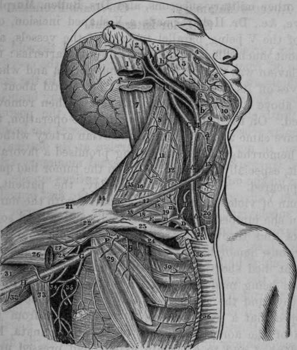

Operation Of Tying The Subclavian Artery In Its Third Stage. Continued
Description
This section is from the book "Anatomy Of The Arteries Of The Human Body", by John Hatch Power. Also available from Amazon: Anatomy of the Arteries of the Human Body, with the Descriptive Anatomy of the Heart.
Operation Of Tying The Subclavian Artery In Its Third Stage. Continued
Mr. Wickham, Surgeon to the Winchester Hospital, was consulted by a patient, a man aged fifty-five years, laboring under an aneurism of the arteria innominata. On September 25, 1839, a ligature was placed on the carotid artery immediately above the omo-hyoideus muscle; the ligature came away on the fourteenth day after the operations. It was determined that the subclavian artery should be tied shortly afterwards, but the patient left the hospital contrary to advice and remained out for a considerable length of time. On his read mission, however, the subclavian artery was tied in its third stage; the tumor increased in size, hemorrhage took place, and the patient ultimately sank.*
The subclavian and carotid were both tied in their first stage upon the same patient by Dr. Hobart, of Cork, in the year 1839. The case was supposed to be one of aneurism of the arteria innominata, and the patient a female of about twenty-five years of age. On a consultation being held of the principal surgeons in Cork, it was unanimously agreed that, in order to give the patient a chance, the distal operations should be performed. Accordingly, in the presence of a large body of medical men, among whom were Sir James Pitcairne and other military surgeons, also Drs. Bullen, Murphy, Howe, etc, Dr. Hobart made a Y-shaped incision, one leg of the V being parallel to each of the vessels, and without much difficulty came down on the arteries : the subclavian was tied between the innominata and where it gives off its first branches, and the carotid about an inch above its origin. The patient was then removed to bed. On the fourteenth day after the operation, the ligature came away from the subclavian artery without any hemorrhage, and every thing promised a favorable result, especially as the pulsation in the tumor had quite disappeared. On the sixteenth day, the patient, a woman of violent temper, had a quarrel with the nurse, when she jumped out of bed, seized a pillow and some books and threw them at her; while making these exertions, hemorrhage set in from the carotid, and the patient died shortly. after. On a post-mortem examination being made, the arteria innominata was found healthy, and the circulation through it had not been stopped, but a pyriform tumor which grew from the arch of the aorta to the left of the innominata, had overlapped and to a certain extent had pressed upon that vessel. It was found that perfect union had taken place where the ligature had been applied, on the subclavian, but a small opening was found in the carotid, through which the hemorrhage had occurred. The tumor was filled with a firm coagulum. The parts were carefully removed by Dr. Wherland, and are preserved in the museum of the College Buildings, Warren's Place, Cork.
* Med. Chirur. Trans., vol. xxiii.
Fig. 20. Dissection of Right Common Carotid, External and Internal Carotid, Subclavian and Axillary Arteries.
A, A, Common Carotid Artery. B, External Carotid Artery. C, Internal Carotid Artery. D, Subclavian Artery in its first stage. E, Subclavian Artery in its third stage. F, Axillary Artery in its first stage. G, Axillary Artery in its third stage. H. Brachial Artery. I, Inferior Thyroid Artery. K, Thyroid Axis. P, Thoracico-acromial Artery. S, Sub-scapular Artery, a, Superior Thyroid Artery. b, Lingual Artery, c, Facial Artery, f, f, f, Occipital Artery, g. Posterior Auris Artery, h, Transversalis Faciei Artery, i. Small branch to Zygomatic muscles, m, Ascendens Colli, which in this case came directly from the Thyroid Axis. n. Supra-scapular Artery. q, Muscular branch, r. Long Thoracic Artery. 1, Insertion of Sterno-mastoid Muscle. 2, Posterior surface of External Ear. 3, Masseter Muscle. 4, Zygomaticus Major Muscle. 5, Steno's Duct cut. 6, Depressor Anguli Oris. 7, Splenius Capitis cut. 8, Levator Anguli Scapulae. 9, Os hyoides. 10, Mylo-hyoid Muscle. 11, Scalenus Medius and Posticus. 12. Scalenus Anticus. 13, Anterior belly of Omo-hyoid Muscle. 14, Trapezius. 15, 16, Muscular Artery. 17. Posterior belly of Omohyoid Muscle. 18, 18, 18, Brachial Plexus. 19, Posterior Scapular Artery which in this case was given off by the Subclavian. 20, Trachea. 21, 22. Deltoid Muscle. 23, Clavicular portion of Right Pectoralis Major cut away. 24, Subclavius Muscle. 25, Sternal portion of Right Sterno-mastoid Musole cut. 26, Termination of Pectoralis Major. 27, 31, Biceps. 28, Coraeo-brachtalis. 29, Pectoralis Minor. 30, Intercostals. 32, Triceps. 33, Latissimus Dorsi drawn outward. 34, 35, Axillary branches. 36, 36, Sternal portion of Pectoralis Major Muscle.
The branches of the subclavian artery are similar on the right and left sides: they are the following:
The vertebral, internal mammary, and thyroid axis come off from the artery in its first stage; the cervicalis profunda and superior intercostal come off in the second stage. The subclavian seldom gives off any branch in its third stage; occasionally, however, the posterior scapular arises in this situation and pierces the brachial plexus of nerves in order to arrive at its destination. Prof. Hargrave has seen the internal mammary artery arise on the outside of the scalenus anticus muscle.
Continue to:
- prev: Operation Of Tying The Subclavian Artery In Its Third Stage
- Table of Contents
- next: The Vertebral Artery